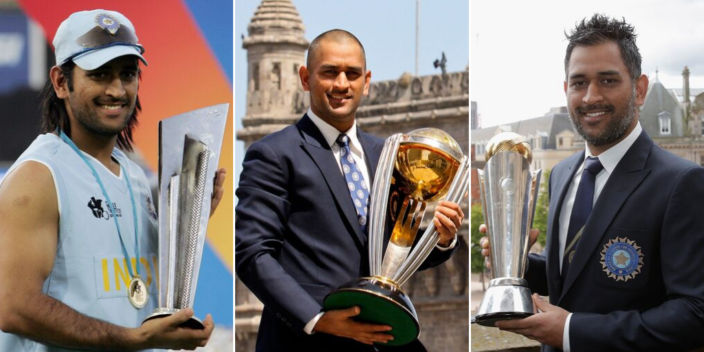

Mahendra Singh Dhoni
1981- Present
Greatest Captian in World Cricket
Ms Dhoni also famously known as Captian Cool, Had made India to proudly represent to win all three ICC Trophies within in very less period. His Contriutions Incldes made TeamIndia No.1 Test team, besides he also had 3 IPL(Indian Premier League) trophies for the most Successfuly Franchise named Chennai Super Kings MS also holds many records like he has taken very few innings to reach as No.1 ODI Batsman which Any player in the world did not achieved. He has been an Inspiration for many Cricket and Non cricket playing Nations and for many Youngsters.

Well Known as finisher
Achievements of MSD
- 1981 - born in Ranchi,Jharkhand
- 1998 - selected by Deval Sahay to play for the Central Coal Fields Limited (CCL) team.
- 1999-2000 - made his Ranji Trophy debut for Bihar
- 2003-04 - part of the East Zone squad that won the Deodhar Trophy 2003–2004 season and contributed with 244 runs in 4 matches
- 2004 - picked for the India A squad for a tour of Zimbabwe and Kenya.
- 2005-he was picked in the ODI squad for the Bangladesh tour in 2004/05.(International debut) In the second match of the series, Dhoni, in his fifth one-day international, scored 148 in Visakhapatnam off only 123 deliveries. Dhoni's 148 surpassed the earlier record for the highest score by an Indian wicket-keeper a record that he would re-write before the end of the year.
the same year in november was promoted to No. 3, and scored an unbeaten 183 off 145 balls, winning the game for India.That innings set various records including the highest individual score in ODI cricket in the second innings, In December, Dhoni was rewarded a B-grade contract by the BCCI.
- 2006 - on 20 april Dhoni overtook Ricky Ponting as number one in the ICC ODI Rankings for batsmen becoming the fastest batsman to do so, in 42 innings
- 2007 - He was also elected as the captain of the Indian squad for the World Twenty20 in September and won the first T20 worldcup in the same year he wad awarded an 'A' grade contract.
- 2009 - Dhoni took his first and only wicket in international cricket.
- 2010 - Again he reclaimed the spot of no.1 ODI batsman
- 2011 - India won The ICC Cricket World Cup 2011 and Dhoni was named as the Man of the match with his unbeaten 91(notout)
- 2012 - Dhoni was the top-scorer for India in the bilateral series against the Rivalry pakistan
- 2013 - Winning the 2013 ICC Champions Trophy, And Dhoni became the first and the only captain in international cricket to claim all ICC trophies. He was also named as captain and wicketkeeper of the 'Team of the Tournament' by the ICC. Dhoni became the most successful Indian Test captain when he eclipsed Sourav Ganguly's record of 21 victories from 49 Tests.
- 2014 - India won the away ODI series in England in by 3–1 and series against West Indies in India by 2–1 margin. Dhoni had a good Desecnt performance with the bat
- 2015 - Cricket World Cup, Dhoni became the first Indian captain to win all group stage matches in such an ICC tournament. Sadly India was knocked out by Australia in Semis and Dhoni was the top scorer of that match.
- 2017 - Dhoni stepped down as captain of India in the limited over formats in January, the same year he became the first wicket-keeper to effect 100 stumpings.
- 2018 - Dhoni surpassed 10,000 ODI runs the fourth Indian and twelfth overall to do so
- 2019 - He was named in India's squad for the Cricket World Cup.In July,in India's semi-final match against New Zealand, Dhoni played in his 350th ODI